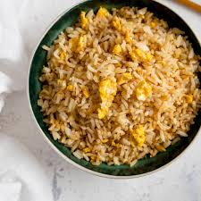

Egg Fried Rice
HomePage

Description
Egg Fried Rice is a quick and easy meal made with simple ingredients you usually have at home. It’s perfect for using leftover rice and takes only a few minutes to cook. The scrambled eggs, soy sauce, and rice come together to create a tasty and satisfying dish.
Ingredients
- 2 cups cooked rice (much better leftover)
- 2 eggs
- 2 tbsp soy sauce
- 1 tbsp oil
- salt or magic sarap (to taste)
Steps:
- Heat oil in a pan
- Crack the eggs and scramble them
- Add rice and stir well
- Pour in soy sauce and mix until rice is evenly coated
- season with a little salt or magic sarap and serve hot